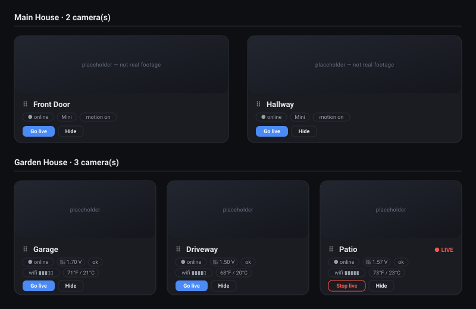
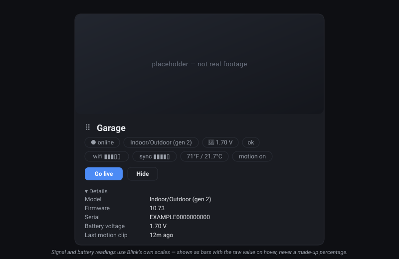
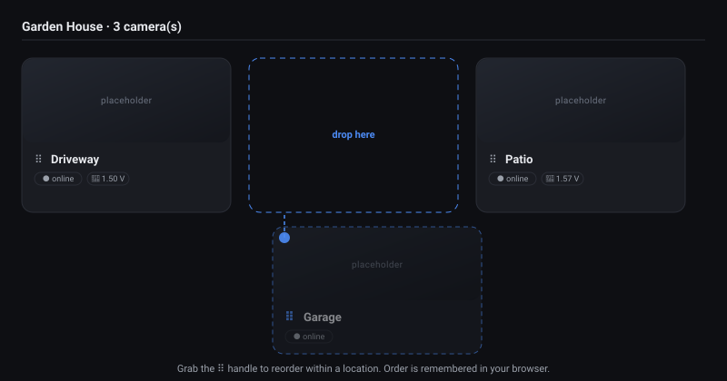
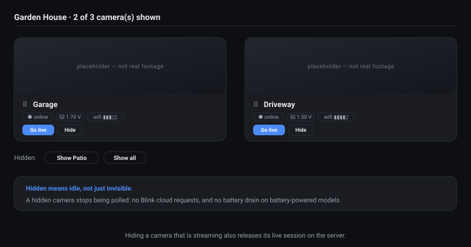

Every camera. One wall.
Self-hosted dashboard for all your Blink cameras — grouped by location, arranged how you like, with live view one click away.
Blink has no local API. Blink Tower talks to Blink's cloud with your own account, then serves the result from a small app on your own machine. It does not make your cameras local, and it is not affiliated with Amazon or Blink.
Read this before you expose it Blink Tower has no login of its own — it refuses every request that did not come from the machine it runs on. To reach it from another device you put a password-protected reverse proxy or a VPN in front of it. Two ready-made recipes below.
What it does
One page, every camera, no tapping through an app one device at a time.
-
Every camera on one wall
All your cameras side by side, grouped automatically by Blink location — one section per sync module, so "Home" and "Garden House" stay separate.
-
Two refresh clocks
Wired indoor cameras refresh fast (5s by default); battery cameras refresh slowly (1 minute by default) to spare the battery. Both rates are dropdowns in the header, not config files.
-
Arrange it your way
Drag a tile by its handle to reorder it within its location, and hide any tile you never watch. Your layout is remembered per browser.
-
Hidden means idle
Hiding a camera stops polling it — no Blink cloud requests, no battery drain. If it was streaming, the live session is released on the server too.
-
The details Blink hides
Each tile shows online state, model, battery state and voltage, wifi and sync-module signal, temperature and the motion setting. Serial, firmware, camera id and last motion clip sit under Details.
Signal and battery readings use Blink's own undocumented scales, so they render as bars with the raw value on hover — never an invented percentage.
-
Live view on demand
Go live opens Blink's real video stream — a proprietary Immedia protocol over TLS, repackaged into browser-friendly HLS by
ffmpeg. Every session has a hard timeout and an explicit stop, because streaming drains the battery. -
Nothing stored server-side
Your tile order and hidden cameras live in your browser's
localStorage. The app keeps no user database, no accounts, no history. -
Small and boring on purpose
FastAPI plus vanilla JavaScript. No bundler, no framework, no build step, one vendored library. MIT licensed — read the whole thing in an afternoon.
What it looks like
These are illustrations of the interface, not screenshots — every camera view is a placeholder, and the camera names are made up. No real footage appears on this page.
-

Every camera in one view, grouped by location. One tile is streaming live. -

One tile, everything Blink will tell you about the camera. -

Drag by the handle to reorder within a location. -

Hide what you never watch; bring it back from the tray.
How it works
Blink is a cloud service. Even though your cameras sit on your wifi, there is no local API — every request goes through Blink's servers and needs your Blink account. Blink's battery cameras are also not built for continuous streaming. So Blink Tower is a hybrid.
-
Default
Snapshot grid
The app asks Blink for a fresh still from each camera on a timer you choose, and lays them all out side by side. Reliable, near-live, easy on batteries — a few seconds behind reality rather than true video.
-
On demand
Live view
Press Go live and the backend opens Blink's real stream and hands it to your browser as HLS. Best effort: Blink caps sessions at around five minutes and it drains the camera, so there is a hard timeout and an explicit stop.
Quick start
Python 3.10 or newer. ffmpeg is only needed for live
view — snapshots work without it.
git clone https://github.com/borlafu/blink-tower.git
cd blink-tower
python3 -m venv .venv
source .venv/bin/activate
pip install -r requirements.txt
cp .env.example .env
# edit .env: set BLINK_USERNAME and BLINK_PASSWORD
uvicorn backend.main:app --no-proxy-headers
# then open http://localhost:8000On first launch:
- Click Connect to Blink.
- Blink emails you a 2FA pin — type it into the app.
- The session is cached locally, so the pin is only needed once.
- Your cameras appear grouped by location and start refreshing.
Before you go further
The default bind is 127.0.0.1 — local only, which is
the safe configuration. If you are thinking about reaching it from
outside the house, read the next section first.
Security — before you publish it
Blink Tower is built for single-user use on your own machine. That is not a disclaimer to skip; it is the design point. Here is exactly what is missing and what to do about it.
- No login of its own. There is no password owned by the app. Instead it refuses any request that did not come from the machine it runs on, so authentication is the job of the proxy or VPN you put in front. Whoever gets through that layer sees the cameras.
-
Already handled: loopback is enforced, not suggested.
The gate checks the peer address of every request — including the
live-video segments under
/hls— so starting the server with--host 0.0.0.0no longer quietly exposes anything. It fails closed with a403. -
Do not port-forward it. Ever. Use a VPN
(Tailscale/WireGuard) or a reverse proxy that asks for a password.
And do not run
tailscale funnel— that publishes the service to the public internet. -
Start uvicorn with
--no-proxy-headers. Uvicorn turns proxy headers on by default and then replaces the peer address withX-Forwarded-For— which makes every proxied client look remote and get refused. Never pair proxy headers with--forwarded-allow-ips '*': that lets anyone spoof a loopback address and walk through the gate. - Already handled: CSRF. State-changing API calls must carry a custom header, which cannot be sent cross-origin without a preflight the app never grants. This matters even behind a proxy password, because browsers cache basic-auth credentials and attach them to cross-site requests.
- Error messages are verbose on purpose. Upstream Blink failure text is passed straight through to the client to make local debugging possible. That is useful at home and a needless information leak anywhere else.
-
Your Blink credentials are real credentials. They
come from the environment only, never hardcoded. Both
.envand the cached session file are gitignored — do not commit them. The session file holds your Blink password and refresh tokens and is written owner-only (0600). - Already handled: untrusted names. Camera names arrive from the Blink cloud, so they are sanitized before being used as filesystem paths and rendered as text rather than markup — no path traversal, no cross-site scripting.
- Already handled: no server-side user data. Your layout preferences never leave your browser, and the app keeps no accounts, sessions or history of its own.
Deploying it safely
Two recipes ship in the repo under
deploy/. Pick by the threat you care about.
-
Quickest
Docker Compose
docker compose up --build -dbrings up the app plus a password-protected Caddy in front of it. The app's own port is never published, and the proxy shares its network namespace so the loopback rule still holds.Ships with a default password for verification and publishes only on
127.0.0.1, so it is not reachable from your network until you change both. -
LAN
Caddy with a password and HTTPS
Caddy becomes the only listener, asks for a password (
basic_auth) and terminates TLS. HTTPS matters even at home: without it that password crosses your wifi in cleartext, where any other device on the network can read it.Protects against other devices and guests on your own network — not just the internet.
-
Remote
Tailscale
tailscale serve --bg --https=443 localhost:8000gives you a real certificate on a private hostname, reachable only from your own devices. No open ports, no public DNS.Honest caveat: Tailscale authenticates the device. A stolen phone that is still on your tailnet is access, so use device approval and key expiry.
Short version: keep the app on loopback and reach it through a VPN, or a reverse proxy that asks for a password. Never a bare port on the internet.
Honest limitations
- Snapshots are near-live — a few seconds behind — not continuous video.
- Live view depends on Blink's undocumented live endpoint. It can end early or fail outright if a camera is busy or offline; the app reports the error and falls back to snapshots.
- Blink's cloud is mandatory. If Blink is down or your account is locked, there is nothing a local app can do about it.
- Layout is per browser. A different browser or device starts from the default arrangement.